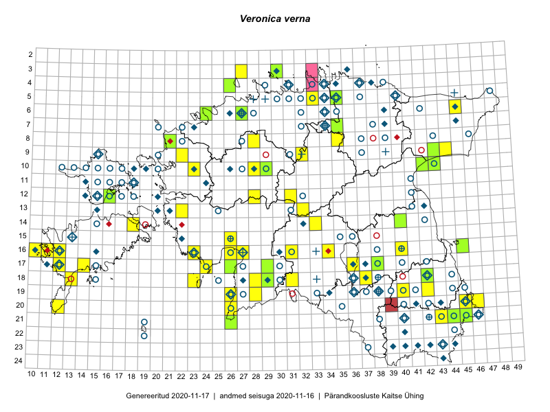

Veronica verna
Uuendatud: 2016-12-01
Kaardile koondatud taksonid: Veronica verna L.

Kaart põhineb 54 kirjel, neist vaatlusi 48 ja eksemplare 6.
Kuvatud viited 20 esimesele andmebaasikirjele, ülejäänud PlutoFis
- Tiit Hallikma, Toomas Kukk, Indrek Tammekänd: 2015-06-09: 12-28: ala
- Peedu Saar, Liina Oja: 2015-05-15: 16-23: ala
- Ott Luuk, Toomas Kukk, Thea Kull, Peedu Saar, Timo Luhamäe: 2015-06-25: 10-28: ala
- Rein Kalamees, Kersti Püssa: 2015-05-28: 20-45: ala
- Rein Kalamees, Kersti Püssa: 2015-05-28: 20-45: ala
- Ott Luuk, Hannes Pehlak: 2015-07-24: 09-44: ala
- Ott Luuk, Hannes Pehlak: 2015-06-09: 12-31: ala
- Toomas Kukk, Timo Luhamäe, Kersti Tambets, Sten Mander, Janika Sammasto: 2014-07-30: 21-45: ala
- Ott Luuk, Elle Roosaluste: 2015-05-29: 18-23: ala
- Ott Luuk, Indrek Tammekänd: 2015-05-22: 18-31: ala
- Jana-Maria Habicht, Ester Valdvee, Kirke Pilvik: 2015-07-14: 08-35: ala
- Ott Luuk, Eerik Leibak, Liisa Rennel: 2015-05-20: 21-26: ala
- Ott Luuk, Eerik Leibak: 2015-05-21: 17-24: ala
- Ott Luuk, Toivo Sepp: 2015-05-14: 09-32: ala
- Kirsi Loide, Marje Loide: 2015-04-17T09:00Z: 13-22: ala
- Mari Reitalu, Sirje Azarov: 2015-05-12: 17-14: ala
- Mari Reitalu: 2015-06-10: 16-12: ala
- Indrek Tammekänd: 2015-05-12: 15-26: GPS punkt
- Triin Reitalu, Sirje Azarov: 2015-05-30: 20-12: ala
- Sirje Azarov, Mari Reitalu: 2015-04-27: 17-14: ala